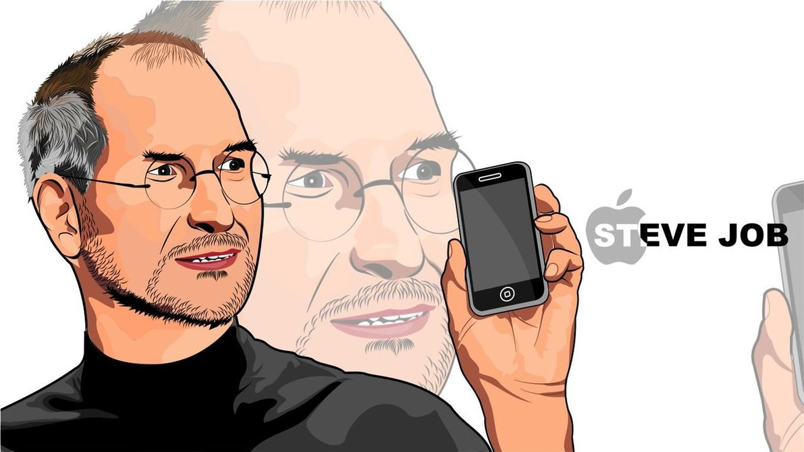

Steven Paul Jobs (24 Şubat 1955 - 5 Ekim 2011), Apple Computer, Inc.'ın kurucu ortaklarından biridir. Ölümünden 5 hafta öncesine kadar yeni adıyla .Apple Inc de CEO olarak görev yapmıştır. Bilgisayar endüstrisinin önderlerinden olarak kabul edilir. Next Computer ve Pixar Animasyon Stüdyoları'nı da kurmuş ve yönetim kurulu başkanlığını yapmıştır. Yönettiği Apple firmasını zirveye çıkardığı yıllarda pankreas kanserine yakalanmış, 7 yıl içinde 56 yaşında ölmüştür.
1970'lerin sonunda, diğer kurucu ortak Steve Woznaik 'la birlikte, ticari başarı sağlayan ilk kişisel bilgisayarlardan birini tasarladı. Jobs, 1980'lerin başında, fare(mouse) ile kullanılan GUI (Grafik Kullanıcı Arayüzü)'n ticari potansiyelini fark edenlerin arasında yer alır.
1985'te yönetim kurulunda kaybettiği güç mücadelesinin ardından Jobs Apple Yönetim Kurulu'ndan çıkartıldı; yüksek öğrenim ve iş dünyası için bilgisayar platformu üretmeyi hedefleyen Next bilgisayar şirketini kurdu. 1986 yılında da Lucasfilm firmasından Pixar'ı satın aldı. 1997 yılında Apple Computer şirketinin NeXT'i satın almasıyla Jobs kurucusu olduğu şirkete geri döndü. O zamandan itibaren icra kurulu başkanı CEO olarak çalıştı. Fortune Dergisi 2007 yılında Steve Jobs'u En Güçlü İşadamı olarak göstermiştir.
Jobs, önceden Lucasfilm şirketinin bilgisayar grafiği bölümü olan Pixar Animasyon StüdyolarI 'nı 1986 yılında satın alır.2006 yılında Walt Disney Şirketi tarafından satın alınıncaya kadar şirketin CEO 'su ve en büyük hissedarıydı. Jobs hayata gözlerini yumana kadar Walt Disney Şirketi'nin en büyük gerçek kişi hissedarı ve yönetim kurulu üyesi olmuştur.
Jobs'un iş dünyasındaki geçmişi, alışılmışın dışındaki bireysel Silikon Vadisi girişimcisi kişiliğinin yarattığı söylentilerle doludur. Estetiğin toplumsal ilgi odağı oluşturmadaki rolünü iyi bilerek tasarımın önemini vurgular. İşlevsel ve zarif olan ürünler geliştirmesi sayesinde sadık bir hayran kitlesi edinmiştir.
Sözleri
- Tasarım sadece nasıl göründüğü ya da nasıl hissettirdiği ile ilgili bir şey değildir. Tasarım nasıl çalıştığı ile ilgilidir.
- Geleceği öngörmenin en iyi yolu onu yaratmaktır
- Hayatınızın her günü son günüymüş gibi yaşayın; bir gün haklı çıkacaksınız.
- Bazen sadece sonuçlar için yaşıyoruz. Ve önemli bir noktayı unutuyoruz. Ödül, yolculuğun kendisidir.